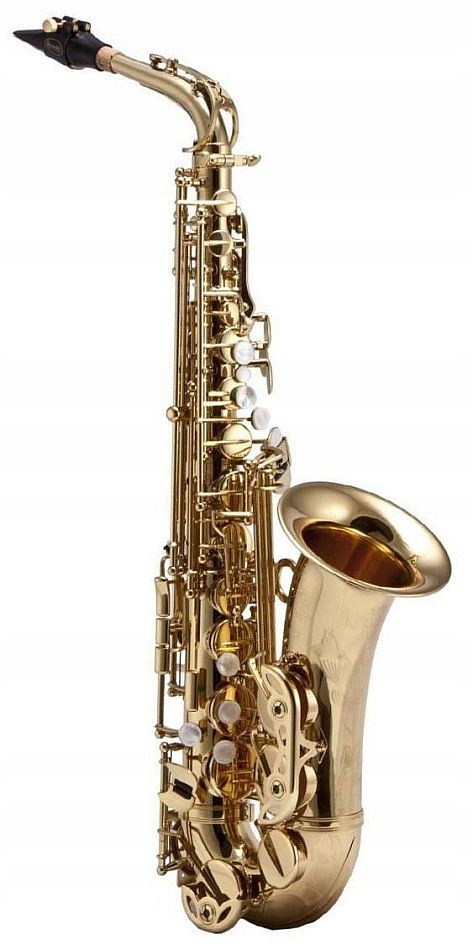

| Najważniejsze rodzaje saksofonu | |||
|---|---|---|---|
| 1 | 2 | 3 | 4 |
| sopranowy | altowy | tenorowy | barytonowy |
Saksofon soparnowy - budowany w stroju B, a charakteryzuje się łagodną i delikatną barwą w niektórych rejestrach zbliżoną moim zdaniem do oboju. Występuje w odmianie prostej lub wygiętej – wówczas przypomina saksofon altowy, ale jest od niego znacznie mniejszy.
Saksofon altowy – w stroju Es (brzmi o sektę wielką niżej niż w zapisie nutowym) jest stosunkowo niewielkim saksofonem, bo jego długość wynosi około 72. Jest to jeden z najpopularniejszych saksofonów. Ze względu na wymiary i ciężar polecany do nauki gry dla dzieci i młodzieży.
Saksofon tenorowy - w stroju B, brzmi nonę wielką niżej od zapisu nutowego. Ma zdecydowanie ciemniejszą barwę niż saksofon altowy. Ten instrument jest bardzo popularny w zespołach grających muzykę rozrywkową i jazz.
Saksofon barytonowy - w stroju Es jest instrumentem dużych rozmiarów. Jego wysokość wynosi ok. 108 cm, natomiast masa ok. 6,5 kg. Z tego względu zamiast paska zaleca się stosowanie specjalnych szelek, które lepiej rozkładają ciężar instrumentu. Saksofony barytonowe często są budowane z dodatkową klapą niskiego A
{kind=link}
{kind=link}
{kind=link}
{kind=link}
{kind=link}